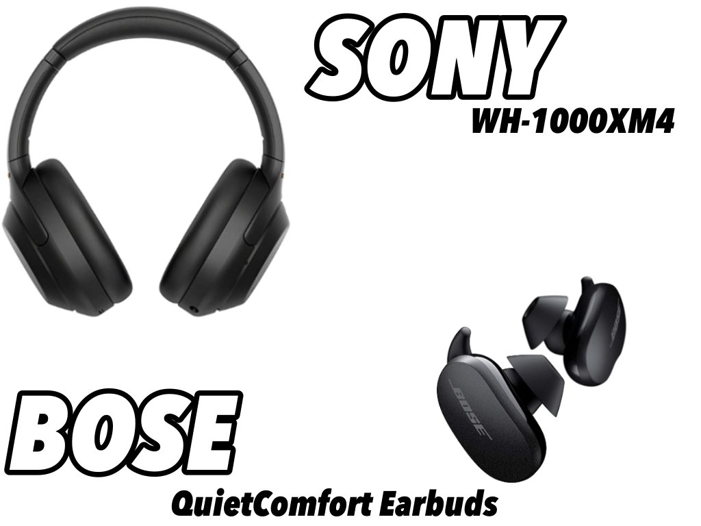
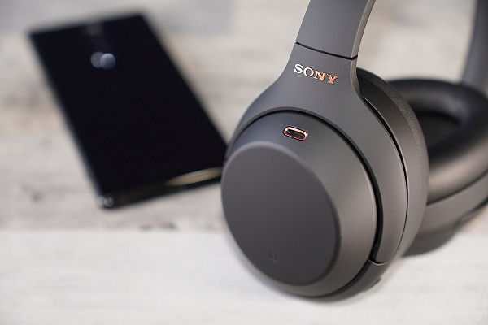
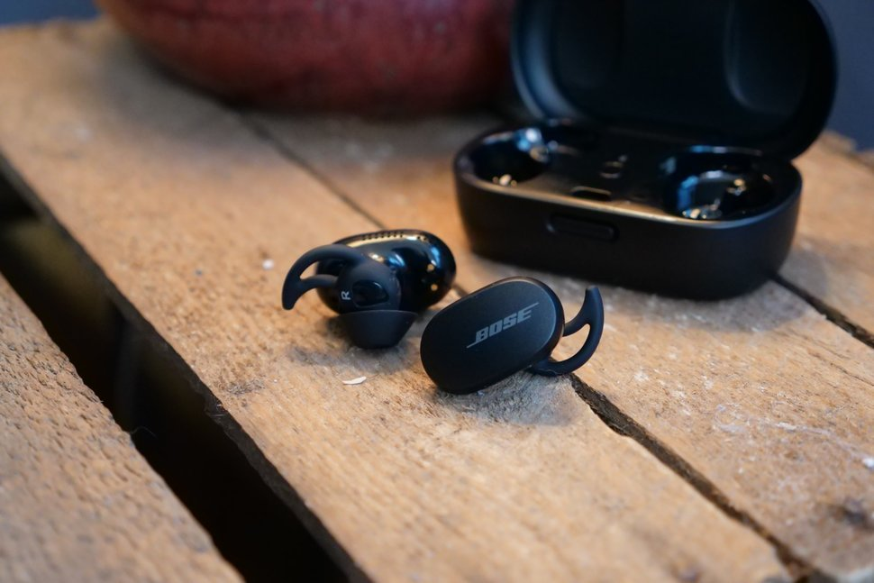

【Sony and Bose】使用感レビュー【ノイズキャンセリング】

最近、イヤホンやヘッドホンに搭載されているANC（アクティブノイズキャンセリング、以下のイキャン）。そのノイキャン搭載モデルの中でも上位を争う２機種を１か月以上使用したので簡単にレビューする。
そもそも、ノイキャンとは
環境音（ノイズ）を打ち消してくれる機能。完全に打ち消すのではなく、音を遠ざけてくれるイメージ。メーカーによって圧迫感（飛行機に乗っているような）が変わる。
メーカーによって圧迫感（飛行機に乗っているような）が変わる。
【Sony WH-1000XM4】

・WHシリーズの４代目。自然なノイキャンと優しく包み込むような着け心地が特徴。
・３０時間持つバッテリーは、休日丸ごと映画鑑賞に使っても心配いらない。
・軽いから着けっぱなしでも疲れない、けどめちゃ蒸れる。
最高ポイント
映画の音のないシーン（緊迫した状況）で最大効果を発揮する。スクリーンに体を持ってかれる感覚はコイツでしか味わえない。
いまいちポイント
イヤーパッドが固定されていて交換できない。
【Bose Quietcomfort Earbuds】

・ノイキャンは、BOSEの創業者アマー・G・ボーズ博士がジェット機のエンジン音を打ち消すため考案した技術。
そのためBoseのノイキャン性能は完成度が高い。
・ヘッドホンのノイキャン性能を詰め込んだモンスター級イヤホン。
大きいがイヤーチップでガッチシ固定するため、全然ずれない。
最高ポイント
流石のノイキャン性能。圧迫感が少ない。Sonyより、ちょっと弱い。外音取り込み機能が優秀で風穴が空いたかのような自然さ、外音取り込みして音楽を流すとスピーカーから聞いている感覚になる。
マイクの音質がいい。
いまいちポイント
ノイキャン性能をオフにできない。常に外の音を拾っているため、急な大きな音は処理しきれずにダイレクトに耳に響く（車のドアを閉める音など）。また、イヤーピースは突っ張り棒のような方法で固定しているため、長時間着けていると痛い。
まとめ
ノイキャンは適切な場所を選べば最高の機能になる。映画鑑賞には必須。